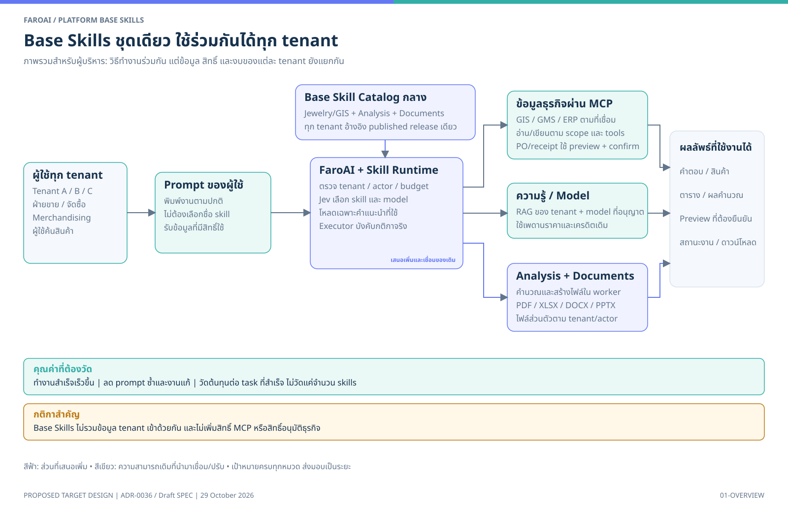

Base Skill
แนวทาง ขั้นตอน และรูปแบบผลลัพธ์สำหรับงานชนิดหนึ่ง ไม่ใช่ API key หรือสิทธิ์เพิ่ม
ความสามารถกลางที่ FaroAI ดูแลและเผยแพร่ให้ทุก tenant ใช้ร่วมกัน ระบบเลือก workflow ที่เหมาะกับคำขอ แล้วทำงานภายใต้ข้อมูล สิทธิ์ และ model policy ของ tenant เดิม
release.json ปัจจุบัน (2026.11.05.2) เป็นหลัก ตัวอย่าง prompt และข้อความสถานะใน SPEC มี metadata เก่าบางจุด; diagram README เป็นภาพ target design ไม่ใช่หลักฐานว่า composition ทุกแบบเปิดใช้แล้วBase Skill ให้แนวทางทำงาน Jev เลือก skill/model ที่เหมาะ ระบบตรวจสิทธิ์ก่อน executor ทำงาน ส่วน MCP และ Qdrant เป็นแหล่งข้อมูลตาม capability ที่เปิดไว้
แนวทาง ขั้นตอน และรูปแบบผลลัพธ์สำหรับงานชนิดหนึ่ง ไม่ใช่ API key หรือสิทธิ์เพิ่ม
เลือก skill และ eligible model ภายใต้ตัวเลือกที่ server ส่งให้ ระบบตรวจการเลือกซ้ำอีกครั้ง
เข้าใจคำขอหรือร่างคำอธิบายเมื่อจำเป็น ตัวเลขและ business facts ต้องมาจากข้อมูลตรวจสอบได้
อ่านหรือทำรายการกับ GIS/GMS/ERP ผ่าน tools ที่อนุมัติและ scope ที่มีอยู่
ค้น approved knowledge/product candidates ตาม flow เดิม ไม่ใช่ที่เก็บ skill package หรือไฟล์ export
โค้ดที่กำหนด operation จริง ตรวจ schema, limits, authorization และผลลัพธ์

ภาพ diagrams มีไว้สื่อสารแนวคิด target flow; สถานะ executor ปัจจุบันดูจากรายการ Skills ด้านล่าง
ค้นหาด้วยชื่อ งาน หรือ ID ได้ รายการพร้อมใช้ยึดสถานะจาก release manifest
ค้นหาและอธิบายสินค้าเครื่องประดับที่ยืนยันได้ รวมถึงข้อจำกัดเช่น “ไม่เอาทรงกลม”
discovery.product · อาศัย GIS/catalog ที่เชื่อมอยู่ตอบจากเอกสารความรู้ที่ tenant อนุมัติและ index แล้ว พร้อมแหล่งอ้างอิงเมื่อมีข้อมูล
discovery.knowledge · ใช้ approved tenant knowledgeค้นหา PO และสรุปข้อมูลที่ GIS ยืนยันให้ เป็นงานอ่านอย่างเดียว ไม่ต้องใช้สิทธิ์สร้างหรือรับสินค้า
procurement.read · approved GIS read toolsสร้างสินค้า draft จาก prompt ให้ชื่อ/คำบรรยายสร้างสรรค์ได้ แต่ SKU, ID และ master ต้องตรวจสอบจากผู้ใช้หรือ GIS
catalog.create · ใช้สิทธิ์และ flow สร้างสินค้าที่มีอยู่แก้ความกำกวมของ supplier/location/voucher/product จาก GIS แล้วทำ preview และยืนยันก่อนเขียน
procurement.create · PO ใหม่รอ GIS อนุมัติตรวจ PO และจำนวนคงเหลือ สร้าง receipt preview และรอการยืนยัน; FaroAI ไม่อนุมัติ PO แทนผู้ใช้
procurement.receive · ต้องเป็น PO ที่ GIS อนุมัติแล้วคำนวณ count, sum, average, min และ max ของ quantity, unit price และ line amount
artifact.analysis · สูงสุด 10 PO / 500 lines ที่โหลดและแสดงในแชท · ไม่ fetch เพิ่มส่งออกข้อมูล PO ที่โหลดและแสดงอยู่เป็น PDF ส่วนตัว พร้อมดาวน์โหลด
artifact.pdf · สูงสุด 500 แถว · ลิงก์/ไฟล์ private หมดอายุ 24 ชม.สร้าง workbook จากข้อมูล PO ที่แสดงอยู่ สามารถนำไปเปิดและตรวจต่อใน Excel
artifact.xlsx · สูงสุด 500 แถว · ไม่ดึงข้อมูล GIS เพิ่มตอน exportสร้างรายงาน Word จากข้อมูล PO ที่แสดงอยู่ในบทสนทนาปัจจุบัน
artifact.docx · สูงสุด 500 แถว · ไฟล์ private หมดอายุ 24 ชม.สร้าง presentation จากเนื้อหาและผลวิเคราะห์ แต่ยังไม่ได้เปิด executor ให้ใช้งาน
artifact.pptx · ยังไม่พร้อมใช้งานไม่พบ Skill ที่ตรงกับคำค้นนี้
เปิดหมวดที่ต้องการแล้วกด “คัดลอก” ใช้ชื่อผู้ขาย/สาขาที่มีจริงใน tenant สำหรับงาน GIS
แทนที่ [ชื่อผู้ขาย] ด้วย supplier ที่มีอยู่จริงใน GIS
คำนวณเฉพาะ PO lines ที่โหลดและแสดงอยู่ในแชท ไม่ดึงข้อมูล GIS เพิ่ม
ต้องค้นหา PO ให้มีผลลัพธ์ก่อน; export ใช้เฉพาะ rows ที่แสดงอยู่
ทุก request ยังต้องผ่าน tenant/actor context, MCP approval, provider/model policy, consent, budget และ operation-specific authorization ที่ระบบมีอยู่
| ชนิดงาน | Flow ที่ระบบต้องรักษา | สิ่งที่ FaroAI ไม่ทำ |
|---|---|---|
| ค้นหา / อ่าน / วิเคราะห์ | อ่านจากแหล่งที่อนุมัติ ระบุขอบเขตและแหล่งข้อมูล; analysis คำนวณด้วย executor ที่กำหนดไว้ | ไม่สร้าง GIS transaction หรือสรุปเกินข้อมูลที่โหลด |
| สร้าง Catalog product | ใช้ direct authorized workflow และตรวจ master/ข้อมูลที่ GIS ยืนยัน | ไม่แต่ง GIS ID, SKU, ราคา หรือ stock ที่ไม่ทราบ |
| สร้าง PO | preview → ผู้ใช้ยืนยัน → ตรวจข้อมูลล่าสุดซ้ำ → mutation แบบใช้ครั้งเดียว | ไม่อนุมัติ PO; PO ที่สร้างรอสถานะอนุมัติใน GIS |
| รับสินค้า | ตรวจว่า GIS อนุมัติ PO แล้ว → preview receipt → ยืนยันแยก | ไม่รับจาก PO ที่ยังไม่อนุมัติ |
| สร้างไฟล์ | สร้าง private artifact จากข้อมูลที่โหลด/แสดงและได้รับอนุญาต | ไม่ fetch ข้อมูลเพิ่มตอน export, ไม่ publish/send ให้คนอื่น, ไม่เก็บเข้า Qdrant/training อัตโนมัติ |
Skill package เป็นเนื้อหาระบบที่ versioned; ข้อมูลลูกค้าและไฟล์งานไม่ปะปนใน shared catalog
.codex/skills เป็นคำสั่งสำหรับ coding agent ไม่ถูกโหลดเป็น skill ให้ลูกค้าภาพ overview และ sequence อธิบาย shared catalog, routing และ artifact worker ในระดับแนวคิด/เป้าหมาย ควรจับคู่กับ manifest ปัจจุบันก่อนสรุปว่า workflow ใด deploy แล้ว รายการ card ด้านบนแสดงสถานะ runtime ล่าสุด
ส่วนนี้ย่อประเด็นสำคัญจาก SPEC ทั้ง 12 หมวด เพื่ออ่านเร็ว; รายละเอียดฉบับเต็มเปิดได้จากลิงก์ต้นทางด้านล่าง
GET /v1/skills/base, POST /v1/skills/analyze และ routes สำหรับ artifact context/create/status/download. Run pin release/skill/executor/policy; วัด Jev, generation, rendering, storage และ retry cost โดยไม่สมมติราคา worker หรือคิด credit ซ้ำ.เปิดต้นฉบับเพื่อดูรายละเอียดครบ; หน้านี้จัดใหม่ให้อ่านและค้นหาได้เร็ว
เปิดอ่านได้เมื่ออยากตรวจถ้อยคำและรายละเอียดต้นทาง โดยไม่ต้องออกจากคู่มือ
# FaroAI Base Skills: prompt examples Updated: 2026-11-02 Catalog source: `ai-service/faroai/base_skills/release.json` (release `2026.11.02.1`) Use these prompts in FaroAI. Shopping, catalog creation, and GIS procurement prompts enter their existing workflows. Jev can choose a published Base Skill only within an already-authorized route. A prompt cannot grant MCP permissions or bypass a required preview/confirmation. ## Available Base Skills ### 1. Jewelry search — `base.jewelry-search` Find verified jewelry in the connected catalog. Results depend on GIS data. ```text ช่วยหา necklace ทองคำสีเหลืองที่มี emerald เม็ดเล็ก ๆ แสดงเฉพาะสินค้าที่ตรวจสอบได้จากแคตตาล็อก ``` ```text Find a yellow-gold necklace with a small emerald. Show verified catalog matches only. ``` ### 2. Approved knowledge answer — `base.knowledge-answer` Answer from this tenant's approved and indexed knowledge only. ```text จากเอกสารความรู้ที่อนุมัติของบริษัท นโยบายรับคืนแหวนเป็นอย่างไร? ระบุแหล่งอ้างอิง และถ้าไม่มีข้อมูลให้บอกว่าไม่พบ ``` ```text According to this tenant's approved knowledge, what is the return policy for rings? Cite the source and say when the information is unavailable. ``` ### 3. Create catalog products — `base.catalog-create` Create creative product drafts through the product workflow. Names and marketing descriptions may be creative; GIS IDs, SKU, prices, stock, and product attributes must come from the user or verified GIS data. Follow the workflow's review and confirmation before writing. ```text ช่วยสร้างร่างสินค้าแหวน 3 แบบ ธีมธรรมชาติ ตั้งชื่อให้แตกต่างกันและเขียนคำบรรยายสินค้าแบบละเอียด ใช้ master ที่มีอยู่จริงใน GIS เท่านั้น ห้ามเดา SKU, ID, ราคา, สต็อก หรือคุณสมบัติอัญมณี แล้วแสดงร่างให้ฉันตรวจ ``` ```text Create three distinct nature-inspired ring product drafts with creative names and detailed marketing descriptions. Use only GIS-verified masters; do not invent SKUs, IDs, prices, stock, or gemstone specifications. Show me the drafts to review. ``` ### 4. Read-only PO search — `base.po-search` Search existing GIS purchase orders. This is read-only and does not need create, approval, or receipt permission. ```text ค้นหา PO ของ [ชื่อผู้ขาย] ที่รออนุมัติ แล้วแสดงเลข PO วันที่ รายการสินค้า จำนวน ราคาต่อหน่วย ยอดรวม และสถานะ ห้ามแก้ไขหรืออนุมัติ PO และห้ามรับสินค้า ``` ```text Find [supplier name]'s POs pending approval. Show the PO number, date, each item, quantity, unit price, total, and status. Do not modify or approve a PO, or receive inventory. ``` Replace the bracketed supplier name with one that exists in GIS. ### 5. Create a purchase order — `base.po-create` Resolve supplier, location, voucher, and products from GIS, then follow the preview and confirmation workflow. FaroAI does not approve the created PO. ```text เตรียมสร้าง PO สินค้า ring จำนวน 5 ชิ้น จากผู้ขาย [ชื่อผู้ขาย] ที่สาขา [ชื่อสาขา] ใช้ Purchase Order voucher ที่ใช้งานได้ใน GIS แสดง preview และรอให้ฉันยืนยันก่อนสร้าง ห้ามอนุมัติ PO หรือรับสินค้า ``` ```text Prepare a PO for 5 ring items from [supplier name] at [location name], using an active Purchase Order voucher in GIS. Resolve products and identifiers from GIS, show the preview, and wait for my confirmation. Do not approve the PO or receive inventory. ``` If required values are missing or ambiguous, FaroAI should ask for those values instead of inventing GIS IDs. ### 6. Receive against an approved PO — `base.inventory-receive` Use only after GIS shows the PO as approved. FaroAI verifies the live PO and remaining quantities, prepares a receipt preview, then follows the confirmation workflow. It cannot approve the PO. ```text เตรียมรับสินค้าคงเหลือจาก PO [เลข PO] ตรวจสถานะอนุมัติและจำนวนคงเหลือจาก GIS ก่อน ถ้า PO ยังไม่อนุมัติให้หยุด แสดง preview แล้วรอให้ฉันยืนยัน ห้ามอนุมัติ PO ``` ```text Prepare an inventory receipt for the remaining quantities on PO [PO number]. Verify its GIS approval status and remaining quantities first. If it is not approved, stop. Show the receipt preview and wait for my confirmation. Do not approve the PO. ``` ### 7. Analyze displayed PO results — `base.data-analysis` This uses deterministic calculations on PO lines already loaded and displayed in this conversation; it does not fetch more GIS data. It supports counts and sum, average, minimum, or maximum for quantity, unit price, and line amount. The limit is 10 displayed POs and 500 loaded lines. Incomplete data is reported as partial. ```text จากรายการ PO ที่แสดง ช่วยคำนวณยอดรวมของ line amount ``` ```text จำนวนบรรทัดสินค้าทั้งหมดในผลลัพธ์ที่แสดงมีกี่บรรทัด? ``` ```text หาราคาต่อหน่วยเฉลี่ยจากรายการที่แสดง ``` ```text Calculate the total line amount for the displayed PO results. ``` ```text How many line items are in the displayed results? ``` ```text What is the average unit price in the displayed PO lines? ``` ### 8. Export displayed PO results — `base.pdf`, `base.xlsx`, `base.docx` First run a PO search. Export includes only the loaded PO lines currently displayed, including the active filter/view, up to 500 rows. It creates a private download that expires after 24 hours. It does not generate arbitrary documents from free-form instructions, fetch more GIS data, or store files in Qdrant. Artifact generation must be enabled in the deployment. ```text ส่งออกรายการ PO ที่แสดงเป็น PDF ``` ```text ดาวน์โหลดบรรทัด PO ที่แสดงเป็น Excel ``` ```text ทำรายงาน Word จากรายการ PO ที่แสดง ``` ```text Export the displayed PO lines as a PDF. ``` ```text Download the displayed PO results as an Excel workbook. ``` ```text Create a Word report from the displayed PO lines. ``` ## Still planned - `base.pptx` — PowerPoint presentations. Intentionally excluded from this implementation as requested. ## Trying the examples - For shopping and approved knowledge, use the main FAROAI search prompt and accept the AI processing notice. - For catalog and GIS procurement, use the same prompt box; the app routes the request to its existing workflow. - Data analysis and exports require a PO result already loaded in the same conversation. Exports also require the artifact worker to be enabled. - A successful run depends on the provider, tenant consent, GIS MCP tools, tenant records, and permissions being configured. - Skills guide execution; they do not grant permissions or make unverified GIS facts true.
# SPEC: FaroAI Platform Base Skills
- **Status:** Accepted target contract; implementation updated 2026-11-02. Ten of eleven skills are registered ready. In addition to the existing six, deterministic analysis of displayed PO results and private PDF/XLSX/DOCX export are enabled. `base.pptx` remains planned by user direction. Scope limits below describe the shipped executor; broader capabilities in the skill table remain target scope.
- **Date:** 2026-10-29
- **Decision:** [ADR-0036](../adr/0036-platform-base-skills.md)
- **Plan:** [BD/PO development plan](../product/discovery/2026-10-29-platform-base-skills.md)
รายละเอียดการทำงาน 30-10-2026: การค้น PO ใช้สิทธิ์อ่านที่อนุมัติแยกจากการสร้าง PO และรับสินค้า ซึ่งต้องตรวจสิทธิ์ preview และเขียนของงานนั้นอีกครั้งตอนยืนยัน หาก Jev ไม่เลือก skill ให้ route อ่านที่ตรวจสิทธิ์แล้วเลือก skill ที่ตรงกันได้ แต่ปฏิเสธตัวเลือกที่ผิดหรือขัดแย้ง ผลค้น vector ไม่ใช่คำตอบที่ยืนยันแล้ว และ fallback ที่ไม่มีโมเดลต้องไม่แสดงข้อความเอกสารดิบที่อาจไม่เกี่ยวข้องแทนคำตอบ
สถานะ implementation 02-11-2026: registry release `2026.11.02.1` มี ready 10 จาก 11 skills. `base.data-analysis` ใช้การคำนวณ deterministic กับ PO lines ที่โหลดและแสดงอยู่แล้วเท่านั้น (สูงสุด 10 PO/500 lines) รองรับ count, sum, average, minimum และ maximum สำหรับ quantity, unit price และ line amount; ไม่อ่านไฟล์ upload หรือดึง GIS เพิ่ม. `base.pdf`, `base.xlsx`, `base.docx` สร้างไฟล์ private จาก PO lines ที่แสดงอยู่เท่านั้น (สูงสุด 500 rows), มีอายุ 24 ชั่วโมง และไม่เขียน Qdrant. `base.pptx` ยังเป็น planned. Artifact worker เปิดแยก profile โดยใช้ PostgreSQL role สิทธิ์จำกัด; ไม่มี Redis dependency ใน worker
## 1. Product contract
ทุก tenant ใหม่และเดิมได้รับ Base Skills ที่ FaroAI publish ใน deployment นั้นโดยอัตโนมัติ ไม่ต้องสร้าง ติดตั้ง หรือเปิดทีละ skill ต่อ tenant ผู้ใช้พิมพ์งานตามปกติ ระบบเลือกขั้นตอนและแสดงคำตอบ ตาราง สินค้า เอกสาร หรือ preview ตามงาน
สิทธิ์และข้อมูลยังมาจาก trusted context เดิม เช่น tenant service credential, actor scope, approved MCP, provider/model policy และเครดิต งานที่ขาด prerequisite แสดงเหตุผลและวิธีตั้งค่าที่จำเป็น การมี Base Skill ไม่เปลี่ยน policy เหล่านี้
Base catalog ครอบคลุมทั้ง generic document/data tasks และ Jewelry/GIS; tenant ที่ไม่มี GIS ยังใช้ generic skills ได้เมื่อมี input, worker และ model ที่งานนั้นต้องการ
## 2. ชุด Base Skills ที่เสนอ
| ID | งาน | Executor/ข้อมูลที่ต้องมี | ผลลัพธ์ |
|---|---|---|---|
| `base.jewelry-search` | ค้น/แนะนำสินค้าและข้อยกเว้น เช่น not round | search adapter, GIS approved tool หรือ indexed catalog ตาม flow เดิม | verified cards และ uncertainty/source metadata |
| `base.knowledge-answer` | ตอบจากเอกสารที่อนุมัติของ tenant | approved tenant RAG | answer พร้อม source references |
| `base.po-search` | ค้น PO/รายละเอียด/สรุปสถานะ | approved GIS read tools | structured PO cards/table |
| `base.catalog-create` | สร้างสินค้าเชิงสร้างสรรค์จาก prompt | scoped existing catalog executor + verified master | GIS bulk job/results ตาม direct flow เดิม |
| `base.po-create` | เตรียมและสร้าง PO | existing procurement executor | preview/confirmation แล้ว pending GIS approval |
| `base.inventory-receive` | รับสินค้าตาม PO ที่ GIS อนุมัติแล้ว | approved PO/receipt tools + permitted actor | receipt preview/confirmation และ actual result |
| `base.data-analysis` | รวมยอด เปรียบเทียบ จัดกลุ่ม filter และวิเคราะห์ข้อมูลที่อนุญาต | typed table/CSV/XLSX adapter และ fixed operations | verified calculations, table/chart spec, narrative เมื่อมี model |
| `base.pdf` | สรุป/สร้าง PDF จากข้อมูลหรือข้อความที่ตรวจแล้ว | private artifact worker + PDF adapter/font/render checks | downloadable PDF |
| `base.xlsx` | สร้าง spreadsheet ตาราง/สรุป/กราฟตาม template | spreadsheet adapter + calculation validation | downloadable XLSX |
| `base.docx` | สร้างรายงาน/ข้อเสนอ Word | document adapter + template/layout validation | downloadable DOCX |
| `base.pptx` | สร้าง presentation จากเนื้อหา/ผลวิเคราะห์ | presentation adapter + slide/render validation | downloadable PPTX |
แต่ละหมวดต้องมี executor จริงก่อนแสดงพร้อมใช้ ระยะแรกของเอกสารเน้นสร้าง/export จาก structured data และ approved text; การอ่าน แก้ไข หรือแปลงไฟล์อัปโหลดเพิ่มตาม input-format conformance ทีละประเภท รวมทั้ง PDF/CSV/XLSX ที่อนุมัติให้รองรับ ไม่อ้างว่าทุกไฟล์เปิด/แก้ได้จากการมีชื่อ skill
**สถานะที่ deploy แล้ว:** readiness ของ `base.data-analysis` และ `base.pdf`/`base.xlsx`/`base.docx` จำกัดเฉพาะข้อมูล PO ที่โหลดและแสดงใน conversation เดียวกัน ไม่ใช่ generic file analysis หรือ arbitrary document composition. PPTX ไม่ advertise และยังไม่มี executor ที่เปิดใช้ผ่าน catalog.
## 3. สิ่งที่แยกจากกัน
| ส่วน | หน้าที่ |
|---|---|
| Base Skill | วิธีทำงาน/หลักเลือกขั้นตอน/รูปแบบผลลัพธ์ที่โหลดเมื่อเกี่ยวข้อง |
| Jev | เลือก skill และ eligible generation model จากตัวเลือกที่ server ให้ |
| Generation model | ตีความ/ร่างข้อความตาม skill และข้อมูลที่อนุญาต |
| MCP | ช่องทางเรียกข้อมูล/การทำรายการของ GIS/GMS/ERP ตาม approved tools |
| Qdrant | ดึง approved knowledge/product candidates ของ tenant ตาม ADR เดิม |
| Executor | โค้ดที่รับ typed input และบังคับ operation policy จริง |
| Subagent | การแบ่งงานให้ agent/context อื่น เป็นความสามารถแยกที่ยังไม่อยู่ใน MVP |
| `.codex/skills` | คำแนะนำสำหรับ coding agent ใน workspace; ไม่ถูกส่งให้ลูกค้า |
กฎ tenant isolation, secrets, confirmation และ budget ต้องบังคับใน gateway/executor แม้ skill หรือ model ไม่ทำตามข้อความคำแนะนำ
## 4. Package และ global release
โครงสร้างที่วางแผนไว้:
```text
runtime-skills/
base/
purchase-order-search/
SKILL.md
faroai.json
references/
assets/
releases/
release-manifest.json
```
`SKILL.md` ใช้ name/description ตามมาตรฐาน ส่วน stable ID/version อยู่ใน metadata หรือ manifest; folder ชื่อเดียวกับ name ตัวอย่างนี้เป็นสัญญาออกแบบ ยังไม่ได้สร้าง package จริง:
```yaml
---
name: purchase-order-search
description: Find and explain purchase orders in Thai or English using verified tenant GIS data.
metadata:
faroai.id: base.po-search
faroai.version: "1.0.0"
---
```
`faroai.json` ที่ platform review ต้องประกาศ executor ID/version ที่ลงทะเบียนแล้ว, input/output schema, required scopes, MCP capability group, model requirements, write class/confirmation contract, limits และ artifact policy โดยไม่ใส่ credentials หรือ tenant-specific records
Runtime validate ขนาดไฟล์/schema/frontmatter, ID/version collision, digest และ resource paths ภายใน bundle; ไม่เดิน symlink หรือ path traversal ไม่ถือ `allowed-tools` ใน frontmatter ว่าเพิ่มสิทธิ์ API ได้
Source อยู่ใน Git; deployment สร้าง immutable release bundle ระบุ skill versions/content hashes/executor compatibility Postgres เก็บ active release selection, publish/revoke audit และรายการเวอร์ชันที่ deploy ไว้ เนื้อหากลางไม่ถูก copy เข้า tenant rows
ทุก tenant ใน deployment resolve release เดียวกัน ระหว่าง canary ให้ใช้ staging/canary deployment หรือ temporary release policy ที่หมดอายุชัดเจน ไม่เปลี่ยนเป็นระบบขอสิทธิ์ base skill ราย tenant หลัง global publish ทุก tenant ต้อง inherit ได้ทันทีสำหรับ request ใหม่
Self-hosted ใช้ bundle ที่มากับ release ไม่ต้อง download จากอินเทอร์เน็ตตอนรับ prompt Dev reload ทำได้เฉพาะ dev mode โดยสร้าง digest ใหม่และยกเลิก version เก่าของ session อย่างชัดเจน Production ใช้ read-only packages ที่ผ่าน publish เท่านั้น
## 5. Routing และ selective loading
[ภาพรวมและ sequence diagrams สำหรับผู้บริหาร/ทีม](../diagram/base-skills/README.md) ใช้ตัวอย่าง PO read -> analysis -> XLSX เพื่อสื่อสาร target flow ในระยะ composition แยกจากสถานะ implementation ปัจจุบัน
```text
Prompt + optional authorized input
-> Hono: trusted tenant/actor + policy + budget context
-> resolve published Base Skill catalog
-> capability/permission shortlist
-> bounded Jev skill choice + compatible model choice
-> validate IDs/version and load selected SKILL.md/references
-> registered executor / existing workflow adapter
-> schema-validated result or artifact job
-> cards/table/answer/confirmation/download in frontend
```
- เพิ่ม typed `skill` choices ใน adapter Jev เดิม พร้อม `none`, `needs_clarification` และ selection validation ไม่รับ endpoint/tool arguments/credentials จาก decision response
- จัด model candidates ตามงานที่ skill ต้องใช้ เช่น tool calling, structured output หรือ vision พร้อม price caps เดิม ตรวจความเข้ากันของ skill/model ฝั่ง server อีกครั้ง การเลือก model ไม่เพิ่มความสามารถ executor
- พยายามรวม skill/model selection กับ decision call ที่จำเป็นอยู่แล้ว แต่ต้องพิสูจน์ conformance ก่อนใช้ ไม่เพิ่ม paid classifier อีกหนึ่ง call ทุก prompt โดยอัตโนมัติ
- Filter/table toggle และ export จาก structured UI action ที่ตรวจสิทธิ์แล้วใช้ deterministic adapter ได้ ไม่ต้องเรียก model เพื่อคำนวณซ้ำ
- เริ่มหนึ่ง primary skill ต่อ request; ช่วง composition รองรับเฉพาะ reviewed plan/dependency templates ที่มี bounds ไม่ปล่อย skill เรียก skill/agent/code วนเอง
- ถ้า Jev ไม่พร้อม ใช้เฉพาะ deterministic route ที่รองรับและตรวจสิทธิ์แล้ว กรณีคลุมเครือให้ถามเฉพาะสิ่งจำเป็น; ไม่เดา write intent
- Catalog อาจรู้จัก skill ที่ execution ไม่พร้อมได้ แต่ router ต้องไม่เลือกไปทำโดยไม่ผ่าน prerequisites ผู้ใช้ที่ระบุงานนั้นตรง ๆ ได้ blocker ที่เจาะจง
- อนุญาต cache ของ immutable package bytes/metadata ตาม release digest ไม่ cache user prompts หรือ Jev decisions ภายใต้การเพิ่มระบบนี้
## 6. Gateway, frontend และ operation policy
เพิ่ม unified server orchestration contract โดยรับ prompt ผ่าน BFF/trusted client และคืน typed response ใช้ tenant จาก server authentication ห้ามเปิด privileged GIS workflow ผ่าน public discovery credential ที่ไม่มี scope
Frontend ส่งหนึ่ง prompt แล้วแสดงผลตาม kind; skill selector ของ browser หรือชื่อ skill ที่ user พิมพ์เป็นคำขอ ไม่ใช่อำนาจเปิด workflow ไม่บังคับให้ user รู้ชื่อ skill/tool/model และไม่บังคับ sign-in เพิ่มถ้า server-held tenant credential เดิมมี scope ถูกต้อง
| Operation | สัญญาที่ต้องรักษา |
|---|---|
| Search/read/analysis | ไม่มี GIS mutation; ระบุแหล่งข้อมูล เวลา และ scope ของข้อมูลที่นำมาคำนวณ |
| Catalog create | explicit authorized request ใช้ direct flow เดิม; inactive defaults, IDs/master validation และ bulk outcome/cancellation ไม่เพิ่ม second confirmation ครอบทุก skill |
| PO create | preview -> explicit confirm -> current re-preview -> single-use mutation; pending GIS approval |
| Inventory receipt | GIS ยืนยัน approved PO ก่อน; receipt preview/confirm แยก; ห้าม AI approve PO |
| Requested artifact | สร้างไฟล์ส่วนตัวให้ดาวน์โหลดตามสิทธิ์; ไม่ส่งให้ผู้อื่นหรือ publish ภายนอกโดยอัตโนมัติ |
Version ของ preview/skill/executor/payload digest ผูกกับ confirmation draft; การเปลี่ยนข้อมูลหรือ policy/revocation ต้องทำให้ตรวจใหม่ได้ ไม่ใช้ skill update แอบเปลี่ยนรายการที่ผู้ใช้ยืนยัน
## 7. Data analysis และเอกสาร
- คำนวณจาก structured data ด้วย fixed operations; model ช่วยตีความ/อธิบาย แต่ตัวเลขยืนยันจาก executor
- ระบุว่า totals คำนวณจากข้อมูลที่โหลดแล้ว หรือทั้ง query ที่ดึงครบจริง ถ้า MCP มี pagination ต้องใช้ approved bounded paging หรือแจ้งขอบเขต ไม่ silent truncate และไม่ select-all ทุก prompt
- สิทธิ์อ่านข้อมูลมาจาก MCP/tenant source เดิม ไม่ต่อ SQL/GIS backend โดยตรง
- ไฟล์ input ต้องตรวจ type/signature/size และจำนวน row/cell/page/slide ตาม adapter limits; ไม่รัน macro, embedded code หรือ external formula links
- Output ใช้ reviewed templates และตรวจ numeric type/formula values, safe text export, missing facts และชื่อไฟล์/MIME ไม่รับ model-generated HTML/path/URL เป็นไฟล์ที่เชื่อถือทันที
- PDF/DOCX/PPTX ตรวจ layout/ฟอนต์ไทย-อังกฤษและการล้นหน้า; XLSX ตรวจ workbook เปิดได้ สูตร/ผลรวม/รูปแบบตัวเลขถูกต้อง
- ระยะแรกเน้น output ที่สร้างใหม่จากข้อมูลที่อนุญาตก่อนเพิ่มความสามารถแก้ไฟล์ซับซ้อนหรือแปลง format
## 8. Worker, jobs, artifacts และ resource limits
Instruction runtime และ registry เพิ่มไฟล์ข้อความ/โค้ด adapter เป็นหลัก ไม่ต้องลง model หรือ container ใหม่เพื่ออ่าน SKILL.md
Artifact phase เสนอ worker แยกจาก AI/embedding service เพื่อแยก dependency, CPU/RAM และการ rebuild ใช้ fixed registered operations พร้อม dependencies ที่ pin ตอน build รันด้วย user ที่ไม่มีสิทธิ์ root, จำกัด filesystem/temp/เวลา/memory และปิด network ตามปกติ ไม่ mount Docker socket/host workspace หรือเปิด shell ให้ model ไม่มี pip/npm/download ตอนรับงาน
แยก worker profile และใช้ shared image/layers ตามความจำเป็น ตรวจขนาด image และพื้นที่ก่อน build; ไม่บังคับติดตั้ง browser/office suite ขนาดใหญ่กับทุก deployment เลือก renderer/adapters และ libraries ตอน implementation จากผล quality/resource spike
Postgres บันทึก artifact job และเป็น durable queue/lease source; worker poll ฐานข้อมูลโดยตรง จึงไม่ต้องใช้ Redis. Worker ตรวจ tenant และ API key ซ้ำก่อน publish ไฟล์ ใช้ operation/renderers ที่ลงทะเบียนตายตัว และตรวจ digest ของผลลัพธ์
Artifacts อยู่ private storage (private volume หรือ object store ตาม deployment) ไม่วางใน `backoffice/public` หรือ Qdrant ใช้ server-generated IDs/paths ตรวจ tenant และสิทธิ์ทุก preview/download มี TTL/delete; executor ที่ deploy แล้วใช้ TTL 24 ชั่วโมงและยังไม่เปิด platform-configurable retention. ไม่ใช้ retention ของ training candidates มาปะปน.
การแปลความหมาย prompt ใช้ flow model/skill decision ของ Jev ที่มีอยู่แล้วหนึ่งรอบ แล้วส่ง prompt ต้นฉบับให้ task model ที่เลือกตีความ ไม่เพิ่ม LLM classifier แยก. Backoffice มี intent hints กลางขนาดเล็กเพื่อเข้า procurement chat และจับชนิดไฟล์/คำขอ export ที่ชัดเจน; hints ไม่แทนการเข้าใจภาษาของโมเดล ไม่กำหนด GIS tool หรือสิทธิ์ และไม่เก็บใน Qdrant. ดู [ADR-0045](../adr/0045-natural-language-intent-routing.md).
สำหรับ executor ที่ deploy แล้ว artifact ถูกเก็บใน private Docker volume; route ตรวจ tenant/API key/actor และสิทธิ์ `chat:write`. ไม่ต้องมี checkbox สร้างไฟล์แยก: Backoffice รับคำขอภาษาธรรมชาติที่ระบุชนิดไฟล์กับเจตนาสร้าง/ส่งออก เช่น “give me a PDF”, “I need a PDF” หรือ “PDF please” แล้วส่ง `x-faroai-export-requested: true` ให้ API เฉพาะตอนสร้าง job. API บังคับ intent นี้ที่ `POST /artifacts`; status/download จำกัดด้วย tenant, API key, actor และ artifact ID ของผู้สร้าง. Job บันทึก tenant/key/actor/format และหมดอายุใน 24 ชั่วโมง. คำสั่ง export เป็นการยืนยันเจตนาของผู้ใช้แอปสำหรับงานนั้น **ไม่ใช่ GDPR/PDPA consent ของ data subject และไม่ใช่ lawful basis**. Data controller ของ tenant ต้องกำหนดวัตถุประสงค์/ฐานกฎหมายและแจ้ง privacy notice ให้ครอบคลุมการประมวลผลและ retention; หากอาศัย consent ต้องจัดเก็บ consent ที่ถูกต้องแยกตามกฎหมายและวัตถุประสงค์. งาน export ต้องใช้ได้ในแชทตั้งแต่ prompt แรก โดย prompt เดียวระบุทั้งขอบเขต PO (supplier/status/เลข PO) และชนิดไฟล์ จึงทำงานได้แม้ปิดการส่งต่อบริบท; ระบบไม่พึ่งประวัติแชทที่ซ่อนอยู่. ถ้าระบุเพียงชนิดไฟล์แต่ไม่บอกขอบเขต ระบบถามหา supplier/status/เลข PO ในแชทก่อนเรียก GIS. เมื่อค้นและส่งออกใน prompt เดียว ใช้เฉพาะ PO rows ที่ผลค้น GIS รอบนั้นคืนมาและแสดงในแชท; follow-up export ใช้ได้เฉพาะ rows ที่โหลดในแชทปัจจุบัน. ห้าม fetch ข้อมูลเพิ่มตอนสร้างไฟล์ และต้องมีอย่างน้อยหนึ่งบรรทัดก่อนสร้างไฟล์; ถ้าไม่พบข้อมูลจะไม่สร้าง PDF เปล่า. Migration `018_base_skill_artifact_binding` ผูก format กับ skill ID. เปิดใช้ด้วย `FAROAI_ARTIFACT_ENABLED=true` และ Compose profile `artifacts`; worker ใช้ dedicated PostgreSQL login ที่สืบสิทธิ์จาก role แบบ `NOLOGIN` จำกัดสิทธิ์ตาราง และ poll PostgreSQL โดยตรง. ดู [ADR-0044](../adr/0044-explicit-export-intent.md).
คำขอ/file/output ไม่ถูกเก็บเข้า shared skill, RAG หรือ training อัตโนมัติ การใช้ข้อมูลเพื่อปรับปรุงยังอยู่ใต้ ADR-0012 และ consent/review เดิม
## 9. Proposed persistence/API contracts
| Record | Scope/ข้อมูลหลัก |
|---|---|
| platform skill release | global release ID, approved bundle digest, compatible executor build, active/revoked state, publisher/audit |
| skill run/steps | mandatory tenant, trusted actor, request/idempotency ID, immutable release/skill/executor references, current step status, usage/error codes |
| skill artifact | mandatory tenant/run/owner scope, private object reference, content hash, MIME, size, created/expires/deleted state |
Run payload ไม่ใช่ raw conversation archive เก็บเท่าที่ job/resume ต้องใช้และตาม retention; ไม่ log keys/raw MCP payloads/ไฟล์ข้อมูล
Proposed endpoints (ต้อง review security และ API convention ก่อน implementation):
- `GET /admin/v1/skills/base`: global published catalog/release และสถานะ executor
- `GET /admin/v1/tenants/:tenantId/skills/effective`: readiness ภายใต้สิทธิ์ tenant ไม่ใช่ list ที่ต้อง grant
- `POST /v1/assist`: unified orchestration ที่รักษา trusted auth/scopes เดิม
- `GET /v1/skill-runs/:id`, `POST /v1/skill-runs/:id/cancel`: job status/cancellation ตาม actor/tenant
- `GET /v1/artifacts/:id/download`: authorized streaming; ไม่ส่ง filesystem path ให้ browser
Business confirmation ใช้/ปรับ existing typed confirmation contract ไม่สร้าง mutation endpoint ที่หลบ gateway เดิม
**Endpoints ที่ใช้งานจริงสำหรับ scope ปัจจุบัน:** `GET /v1/skills/base`, `POST /v1/skills/analyze`, `GET /v1/artifacts/context`, `POST /v1/artifacts`, `GET /v1/artifacts/:id`, และ `GET /v1/artifacts/:id/download`. Data analysis รับ typed operation + PO rows ที่โหลดมาแล้ว; artifact creation รับคอลัมน์/แถวที่แสดงใน Backoffice ไม่รับ code, URL, file path หรือ arbitrary model-generated document instructions.
## 10. Release, observability และต้นทุน
- Run pin release/skill/content/executor/policy versions; policy/credential/tool revocation ตรวจใหม่ก่อน business write เสมอ
- Publish/rollback เลือกเฉพาะ reviewed bundles ที่ deploy แล้ว ไม่มี admin upload arbitrary code ใน MVP
- Emergency disable หยุด request ใหม่และตรวจ queued/confirmation steps; in-flight mutation ที่ส่งแล้วต้องแสดง unknown/actual job status ตาม source ไม่อ้าง cancel สำเร็จ
- Shadow/evaluation เปรียบเทียบ routing จาก fixtures หรือ read-only pilot; ห้าม execute งานเขียนซ้ำหรือจ่าย model call เพิ่มโดยไม่ติดตาม budget
- รวม usage/cost ของ Jev + generation + worker/render + storage/retry ระบุ estimated/observed/unknown ไม่สมมติว่า provider price cap คุมค่า worker ทั้งหมด
- Adapter migration ต้องระบุว่าใคร reserve/settle credits เพื่อป้องกันคิดซ้ำ; ไม่เปลี่ยนค่า credit unit/pricing ในการย้ายเป็น skill
## 11. Acceptance และ regression gates
1. Tenant ใหม่/เดิม inherit published release เดียวกันโดยไม่สร้างสำเนา skill หรือ grant ราย tenant; self-hosted อ้าง release ของ deployment อย่างถูกต้อง
2. ไม่ activate unknown/unpublished/revoked skill หรือ executor ที่ไม่รองรับ version; no-skill/clarification เป็นผลลัพธ์ที่ถูกต้อง
3. โหลด body/references เฉพาะ selected skills; อธิบาย missing model/tool/scope/input/worker ได้
4. Prompt, uploaded content และ MCP text เปลี่ยน tenant, endpoint, scopes, skill policy หรือ confirmation ไม่ได้; ข้อมูล tenant A ไม่รั่วไป B ผ่าน job/artifact
5. Existing cards/structured PO results/local filters/direct catalog create/confirmed PO-receipt flows ผ่าน regression รวม replay, changed preview, cancellation และ source unavailable
6. ตรวจ test-specific Ham/Central Worl/voucher/note logic และแทนด้วย parameter resolution ที่มาจาก user/live tenant GIS ก่อน global executor publish
7. ภาษาไทย/อังกฤษและคำขอสั้น/คลุมเครือ/ไม่ครบทำงานได้; ไม่จัด read request เป็น write หรือบังคับ user รู้ tool ID
8. ทุก format ที่ advertise พร้อมใช้ต้องมีไฟล์เปิดได้จริง, content/calculation validation และ rendered visual QA ไม่รายงาน success จากการสร้าง metadata เท่านั้น
9. Timeout/partial/unknown outcome แสดงตามจริง; restart/retry ไม่คิด credits หรือเขียน GIS ซ้ำ; failed artifact ไม่ได้ download link ที่อ้างว่าเสร็จ
10. เก็บ baseline selection/task success, rework, latency, artifact quality และ cost per completed task แล้วกำหนด proposed release thresholds ก่อน rollout; safety invariants ต้องไม่มี cross-tenant access หรือ confirmation bypass ใน acceptance suite
## 12. Evidence และขอบเขตการตรวจ
ตรวจ source entrypoints ณ 29-10-2026: `backoffice/app/discovery-page.tsx` (`search`, intent checks), `backoffice/app/actions.ts` (`gisPromptRequest`), `gateway/src/admin.ts` (service credential exception/procurement routes), `ai-service/faroai/routing.py` (Jev/tool allow-list), `ai-service/faroai/app.py` (prompt/tool loops และ bulk branch) และ worker/Dockerfile ที่เกี่ยวข้อง ไม่ใช่การตรวจ runtime หรือทดสอบ end-to-end ในรอบวางแผนนี้
[Agent Skills specification](https://agentskills.io/specification) และ [client integration guide](https://agentskills.io/client-implementation/adding-skills-support) รองรับแนวคิด package และ selective loading; API, authorization, executor isolation และ release policy ในเอกสารนี้เป็นข้อเสนอของ FaroAI ไม่ใช่ข้อรับประกันจากมาตรฐาน
{
"release": "2026.11.05.2",
"skills": [
{
"id": "base.jewelry-search",
"name": "jewelry-search",
"description": "Find and explain verified jewelry products and explicit search constraints.",
"version": "1.0.0",
"status": "ready",
"executor": "discovery.product",
"digest": "41b09ffe4b946edc19ecac34551a41630fc474642f1caba547936446c97d5c80"
},
{
"id": "base.knowledge-answer",
"name": "knowledge-answer",
"description": "Answer questions using approved knowledge belonging to the current tenant.",
"version": "1.0.0",
"status": "ready",
"executor": "discovery.knowledge",
"digest": "973875246e8ef9aceb2b457e17be8e56bc9a26782e011428a1e67e74cfc8023e"
},
{
"id": "base.po-search",
"name": "po-search",
"description": "Find purchase orders and summarize verified GIS records without making changes.",
"version": "1.0.0",
"status": "ready",
"executor": "procurement.read",
"digest": "b11c6c5faac47ec5d9b05196224f86fcc0b7cf7dcba7fd4f5b21b0d1f3d207b5"
},
{
"id": "base.catalog-create",
"name": "catalog-create",
"description": "Create creative catalog products through the authorized GIS catalog workflow.",
"version": "1.0.0",
"status": "ready",
"executor": "catalog.create",
"digest": "c0d00412bfd77d7511b0a7d1c3e8376cd1979ae9492c8fe8687a0e78d0026729"
},
{
"id": "base.po-create",
"name": "po-create",
"description": "Prepare a purchase order preview and use the existing confirmed GIS workflow.",
"version": "1.0.0",
"status": "ready",
"executor": "procurement.create",
"digest": "7e246123d85fad8b7dc0c57eec59bd33fb135e30a03d40b067b7e15e13b35980"
},
{
"id": "base.inventory-receive",
"name": "inventory-receive",
"description": "Prepare a receipt against a GIS-approved purchase order with confirmation.",
"version": "1.0.0",
"status": "ready",
"executor": "procurement.receive",
"digest": "cca9e8f7eb64e926511f1cf75764e3a785972c7af86cc3e70bb774050885e6a6"
},
{
"id": "base.data-analysis",
"name": "data-analysis",
"description": "Analyze authorized tabular data using verified deterministic calculations.",
"version": "1.0.0",
"status": "ready",
"executor": "artifact.analysis",
"digest": "5e685ad1e8655438239fa1dbefa2a9cdfa82ec4eb1d63dc54ebfa20981cac52d"
},
{
"id": "base.pdf",
"name": "pdf",
"description": "Create an authorized PDF document from approved content and data.",
"version": "1.2.0",
"status": "ready",
"executor": "artifact.pdf",
"digest": "868cc829e277b9bd3b2aa77577e0786cabdbf487b8de2fc9739a316e83b472bc"
},
{
"id": "base.xlsx",
"name": "xlsx",
"description": "Create an authorized Excel workbook from verified tabular data.",
"version": "1.2.0",
"status": "ready",
"executor": "artifact.xlsx",
"digest": "47f55f93ac5630823cdc52da5aceb72746221e9b09ebb065ff038fd3aa34d51e"
},
{
"id": "base.docx",
"name": "docx",
"description": "Create an authorized Word document from approved content and data.",
"version": "1.2.0",
"status": "ready",
"executor": "artifact.docx",
"digest": "cd1b4da48a831db8ed186eb89851714b3d0ec63bf6dd9bf452bdb032fc3936bb"
},
{
"id": "base.pptx",
"name": "pptx",
"description": "Create an authorized PowerPoint presentation from approved content and data.",
"version": "1.0.0",
"status": "planned",
"executor": "artifact.pptx",
"digest": "10e2f8a16c1d4a72f3e6166d0f381f32e6f228347b0fbfc9d5830c2fa37502dc"
}
]
}
# FaroAI Base Skills: executive view and sequence diagrams วันที่: 29 ตุลาคม 2026 | **Proposed target design** จาก [ADR-0036](../../adr/0036-platform-base-skills.md) และ [Draft SPEC](../../spec/platform-base-skills.md) ไม่ใช่ภาพสถานะ production ที่ตรวจแล้ว ## เปิดประชุมหรือส่งต่อ - [HTML เปิดดูได้ทันที](index.html): เลือกภาพ/ขยาย และเปิด PDF หรือไฟล์แก้ไขได้ ไม่ต้องเชื่อม CDN - [PDF 3 หน้า](faroai-base-skills-diagrams.pdf): vector A3 landscape พร้อมฟอนต์ไทย - [draw.io แบบแก้ไขได้](base-skills.drawio): 3 pages; เปิดใน diagrams.net/draw.io ## ภาพที่ 1: ผู้บริหาร [ภาพรวม SVG](01-overview.svg) แสดงวิธีที่ Base Catalog กลางใช้กับทุก tenant, Jev/Skill Runtime เลือกวิธีทำงาน และนำความสามารถเดิมมารวมกับ analysis/document worker ที่เสนอเพิ่ม สารหลัก: ทุก tenant ได้ชุด skill เดียวกันใน deployment โดยไม่ต้องติดตั้งราย tenant ข้อมูลและสิทธิ์ยังแยกกัน วัดคุณค่าจากงานสำเร็จ เวลา งานแก้ และต้นทุน ไม่ใช้จำนวน skills เป็นตัวแทน ROI ## Sequence 1/2: เลือก skill และอ่านข้อมูล [SVG](02-sequence-routing.svg) / [Mermaid source](02-sequence-routing.mmd) ตัวอย่าง “สรุป PO รออนุมัติแล้วทำ Excel” เป็นเป้าหมายระยะ composition ของแผน ไม่ใช่ความสามารถที่เปิดแล้วทั้งหมด Gateway ตรวจ trusted tenant/actor/budget ก่อน Runtime resolve release, ส่งเฉพาะตัวเลือกที่อนุญาตให้ Jev, ตรวจผลแล้วโหลดคำแนะนำเฉพาะ skill ที่ใช้ MCP ให้ข้อมูลจริง และ model ช่วยอธิบายเฉพาะเมื่องานต้องใช้ ไม่ให้ model คำนวณยอดแทน deterministic executor เมื่อสร้างไฟล์ต้องบันทึก durable job ก่อนตอบ queued รูปแสดง logical responsibilities; การรวม skill/model selection ใน decision call เดียวต้องผ่าน compatibility checks ตอน implementation ## Sequence 2/2: worker และไฟล์ส่วนตัว [SVG](03-sequence-artifact.svg) / [Mermaid source](03-sequence-artifact.mmd) PostgreSQL เก็บ job manifest/status แบบถาวร Redis ส่ง job identity ให้ worker Worker ตรวจ context/version/policy คำนวณและสร้างไฟล์ แล้วเก็บใน private storage การอ่านสถานะและดาวน์โหลดผ่าน Gateway ที่ตรวจ tenant/actor/expiry UI polling ในภาพเป็นการติดตาม job อัตโนมัติ ไม่ใช่ให้ผู้ใช้พิมพ์ prompt ซ้ำ และ source snapshot reference ไม่ได้หมายถึงส่ง raw MCP payload เข้า logs/queue ## กติกาที่ต้องอธิบายต่อทีม 1. Shared Base Skills คือวิธีทำงาน ไม่ใช่การแชร์ข้อมูล tenant หรือให้สิทธิ์ tools เพิ่ม 2. Read/search/analysis/file generation ไม่สร้าง GIS transaction แอบแฝง 3. Catalog create คง direct authorized policy เดิม; PO/receipt ต้อง preview → confirm → re-preview; FaroAI ไม่ approve PO 4. Skill/model IDs, runtime versions, tools และ artifact access ต้องตรวจฝั่ง server ไม่อาศัยข้อความใน SKILL.md อย่างเดียว 5. Qdrant ใช้ approved knowledge/product retrieval ตาม flow เดิม รูปยุบไว้ในกล่องความรู้; ไม่เก็บ skill code, artifact bytes หรือเรียนรู้จากผลลัพธ์อัตโนมัติ 6. สีฟ้าคือสิ่งที่เสนอเพิ่ม สีเขียวคือความสามารถเดิมที่นำมาต่อ/ปรับ; ทั้งภาพเป็น target design ไม่ใช่แผนผัง container ## สร้างไฟล์ใหม่จาก source `build_diagrams.py` เก็บ layout/labels กลาง แล้ว export SVG, PDF, HTML, editable draw.io และ Mermaid ให้ตรงกัน ใช้ Python + ReportLab และฟอนต์ Thai ที่ระบุใน script ไม่ต้องลง dependency ใน FaroAI runtime ```powershell python -B documents/diagram/base-skills/build_diagrams.py ``` Review: เทียบกับ ADR/SPEC เรื่อง inheritance, scoped credentials, selective loading, write policy, durable jobs และ private artifacts; render PDF ทั้งสามหน้าเพื่อตรวจความอ่านง่าย